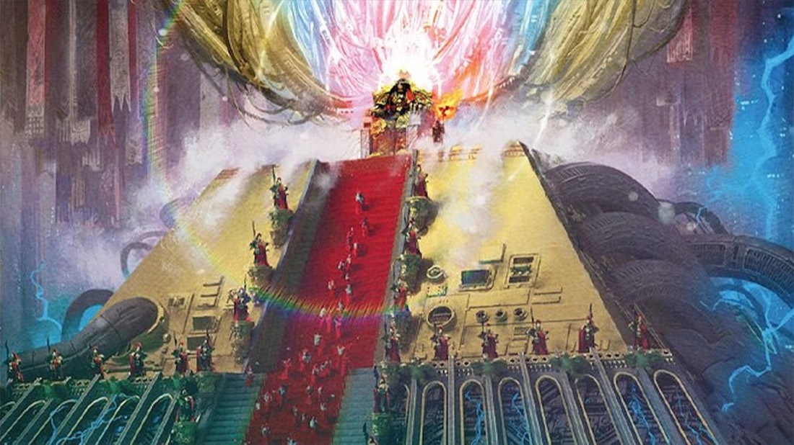

Golden Throne
| Golden Throne | |
|---|---|
 The Golden Throne atop its stepped dais in the Sanctum Imperialis, from a Palace fresco | |
| Type | Psychic life-support and warding machine |
| Location | Throne Room, Sanctum Imperialis, Imperial Palace, Terra |
| Built | c. M31, in its first form as the keystone of the Emperor's Webway gate |
| Occupant | The Emperor of Mankind, since 014.M31 |
| Tended by | Adeptus Mechanicus, Adeptus Custodes, Sisters of Silence |
| Power source | Psychic sacrifice; the souls of psykers |
| Linked systems | The Astronomican; the Imperial Webway gate |
The Golden Throne is the machine on which the Emperor of Mankind has sat since the end of the Horus Heresy. It is a vast mechanism of gold and adamantium in the Throne Room of the Imperial Palace on Terra, and it keeps the Emperor's broken body at the threshold between life and death. It is fed by the psychic energy of the psykers sacrificed to it, and it is the source, in Imperial belief, of the Astronomican that guides the Imperium's ships through the Warp.[1]
The Throne was not designed for this purpose. It was the first element of the Emperor's great Webway project, and the Emperor's last act before the Heresy was a failed effort to complete it. After his duel with Horus, it was adapted in haste to save his life, and it has been the keystone of the Imperium ever since.[2] It is old, overstrained and failing, and the Adeptus Mechanicus has not been able to improve upon it.
Origins
[edit]The Webway project
[edit]After the victory at Ullanor the Emperor returned to Terra to resume work on a gateway to the Webway, the hidden network of tunnels that lies beside the Warp. The gate was to be built in the dungeons below the Palace, in a chamber that held an ancient portal, and its centre was a machine of immense psychic and mechanical complexity that the Emperor's workers called the Throne.[2] It was intended to hold open a stable path into the Webway and to channel the Emperor's will into it.
The work was done in secret. Even the primarchs were not told its purpose, and the Emperor allowed only a handful of servants, among them the Adeptus Custodes, Malcador the Sigillite and select tech-priests, into the chamber. The Throne was not completed before the Horus Heresy broke the Emperor's schedule. According to the sealed Webway records, the machine was in an unfinished state when Magnus the Red broke into the workings with a warning, and much of the damage done by that intrusion was never fully repaired.[2]
The Siege of Terra
[edit]
During the Siege of Terra the Emperor left his work in the Webway to fight the traitor armies, and the Throne's mechanism was left in the care of Malcador the Sigillite and of the Mechanicum. In the closing hours of the siege, when Horus was killed on the bridge of the Vengeful Spirit and the Emperor was mortally wounded, Rogal Dorn carried him to the Throne.[3]
The Mechanicum adapted the Throne within hours. The machine's conduits, which had been designed to draw upon the Emperor's psychic strength to open the gate, were reversed so that they drew upon the Throne's own stores and the psychic strength of others to preserve the Emperor's life. Records disagree on who performed the first connection; the Mechanicus credits its own adepts, while the Ecclesiarchy teaches that the Emperor guided the work himself from the threshold of death.[4]
Description
[edit]
The Throne stands at the top of a stepped dais, deep within the Sanctum Imperialis. It is a vast construct of gold, adamantium and ancient machinery, in whose heart the Emperor is bound. The Throne's walls are lined with machines that regulate the Emperor's body, and cables thick as a man's body run down from it into the foundations of the Palace. Votive offerings, skulls and the standards of lost Legions fill the chamber below.[1]
The Emperor himself is described in pilgrims' accounts as a withered husk, his flesh long since preserved or dessicated, his skull bound with the wiring of the machine. The Ecclesiarchy teaches that a spark of his consciousness endures behind this, and the Mechanicus agrees only that a physical form still exists.[1] A halo of Warp light is said to hang above the Throne, and the Astronomican is believed to issue from it in a tower of psychic light that rises through the roof of the Palace.
Operation
[edit]Psychic sacrifice
[edit]The Throne's power is derived from the psychic energy of living psykers. Each day, hundreds of psykers are brought to the Throne Room and bound to its machinery, where their souls are consumed and their bodies discarded. The psykers are gathered by the Black Ships of the Adeptus Astra Telepathica from every world in the Imperium and brought to Terra by way of the Soul-binding ritual, a process that the Imperial Cult regards as sacred.[1][a]
The sacrifice is considered by the Imperial Cult to be a holy act. The psykers, they teach, give their souls to the Emperor and are taken by him into the light of the Astronomican. The Mechanicus gives no such teaching, and regards the process as a matter of engineering. Inquisitorial records, from the Ordo Hereticus, note that the sacrifices are accompanied by dread and by occasional breaches of the Palace's null-wards.[4]
The Astronomican
[edit]The Throne is believed to be the source of the Astronomican, a psychic beacon that allows Navigators to guide ships through the Warp. The Astronomican is the product of the Emperor's will, amplified by the Throne and by the Adeptus Astronomica, and it is visible to those who have the sight as a bright light that cuts through the darkness of the Immaterium for fifty thousand light-years. The opening of the Great Rift has cut off a large part of the Imperium from it.[1]
Failing machinery
[edit]The Golden Throne is now over ten millennia old and is failing. Mechanicus records, which are the most candid, note that parts of the Throne have been replaced by the Palace's tech-priests many times, that other parts have been lost, and that the knowledge needed to repair the central mechanism was never recorded. Each year the Throne requires more sacrifice to give less.[5]
This is the principal reason for the High Lords of Terra's fear that the Emperor will one day cease to live. Opinion varies on what would follow. The Ecclesiarchy teaches that the Emperor would be released from his suffering and the Imperium might fall into darkness. The Mechanicus warns that the Astronomican would fail and that Terra's psychic defences with it. Guilliman, since his return, has ordered the Throne room reinforced and a thorough account made of the Throne's condition, the results of which have not been published.[6]
In the Imperial Cult
[edit]The Imperial Cult regards the Throne as the holiest object in existence, a shrine in which a god sits, sacrificing himself so that humanity may live. Pilgrims who reach Terra seek to catch a glimpse of its glow from the outer courts of the Palace, and the faithful who die in the Emperor's name are said to be received into its light. The Ecclesiarchy holds a procession in its honour, and no religious festival in the Imperium is more widely observed.[4]
See also
[edit]Notes
[edit]- ^ Earlier Imperial records give the figure as one thousand psykers a day. The Office of the Lord Commander, whose records are the most recent, speaks only of hundreds. The Mechanicus attributes the change to improvements in the Throne's efficiency rather than to any change in the number of souls.
References
[edit]- ^ a b c d e Codex Imperialis (rev. 980.M41). Adeptus Terra.
- ^ a b c The Webway Ledgers of the Palace (sealed, c. 014.M31). Office of the Regent, Terra.
- ^ Chronicles of the Heresy (sealed). Logos Historica Verita, Terra.
- ^ a b c Liber Ecclesiasticus (M37). Adeptus Ministorum.
- ^ Cawl, Belisarius (c. 999.M41). Notes on the Ultima Founding. Mars.
- ^ Records of the Indomitus Crusade (ongoing). Office of the Lord Commander.